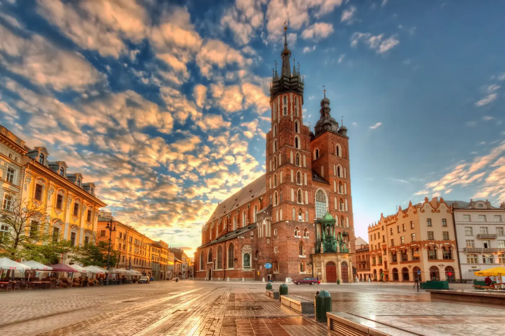

A route through the most interesting culinary regions of Poland — from Podlasie kibiny to Kashubian herring, from Podhale oscypek to Silesian roulade. Slow travel along the Polish Culinary Trail.
Why the Polish Culinary Trail, differently
The Polish Culinary Trail is a proposal for those who want to travel through the country at a slow pace — eating what is local, seasonal, and prepared with methods passed down from generation to generation. The route runs through the most interesting culinary regions of Poland and allows you not only to taste but also to understand cuisine as part of culture. It is a journey through flavors that tell the story of regions, people, and traditions.
Slow travel along the Culinary Trail is a celebration of taste. Instead of rushing from restaurant to restaurant, stop in one place longer — in a village inn, in a milk bar, in an agritourism farm. Each dish has its own story, its own region, its own cook. Ask where the ingredients come from, how the dish is prepared, who passed down the recipe. This is a journey that rewards those who slow down — the longer you are in one place, the more flavors you can truly get to know.
What to see
The Culinary Trail splits into several sections, corresponding to regions: Podlasie (kibiny, kartacze), Lesser Poland (oscypek, kwaśnica), Subcarpathia (proziaki, fuczki), Kashubia (herring, eel), Silesia (roulade, dumplings), Greater Poland (croissants, pyry), Warmia and Masuria (vendace, marzipan), Lublin region (cebularz, pierogi with bryndza), Lower Silesia (duck, dumplings), Kuyavia (gingerbread, żur). Riding the whole route takes 7–14 days.
Podlasie and Lublin region
- Kibiny — Tatar meat pastries, baked or fried. A classic of Podlasie cuisine. Best at milk bars in Białystok.
- Kartacze — potato dumplings stuffed with meat. Hearty, substantial, rural. A wedding dish in Podlasie.
- Potato babka — a baked dish of grated potatoes, bacon, onion and eggs. Served with sour cream or mushroom sauce.
- Lublin cebularz — flat yeast dough with onion and poppy seeds. Sold at markets and bakeries throughout the Lublin region.
- Pierogi with bryndza — delicate pierogi with sheep cheese, a specialty of the Polish-Ukrainian borderland.
- Roztocze trout — fresh, grilled or from the grate, with horseradish and lemon.
Lesser Poland and Subcarpathia
- Oscypek — smoked sheep cheese, formed into characteristic spindles. Served grilled, with cranberry.
- Kwaśnica — highland sauerkraut soup with meat. Warms from the first sip.
- Bryjka — a dish of corn flour, served with cranberry, butter or cracklings.
- Proziaki — soda bread pancakes, served with garlic butter or lard. A Bieszczady classic.
- Fuczki — cabbage fritters, a Lemko dish. Worth trying in local taverns.
- Hreczanyki — buckwheat groat pancakes with curd cheese, fried in a pan.
Kashubia, Pomerania and Warmia-Masuria
- Herring in oil — a Kashubian classic. Variants in sour cream, in vinegar, with mustard.
- Smoked eel — a delicacy from Kashubian lakes, available in smokehouses.
- Kashubian broth — chicken broth with dried mushrooms, with noodles or dumplings.
- Smoked vendace — a fish from Masurian lakes, traditionally smoked.
- Olsztyn marzipan — the sweet icon of Warmia, handmade from almonds.
- Kindziuk — a cold cut from game, seasoned with garlic and marjoram.
Silesia, Greater Poland, Lower Silesia
- Silesian roulade — beef rolled with bacon, onion and cucumber, with Silesian dumplings and modra kapusta.
- Silesian dumplings — round potato dumplings with a hole, served with sauce and meat.
- Silesian kołocz — sweet yeast cake with streusel and various additions.
- St. Martin's croissant — the most recognisable pastry of Greater Poland, with white poppy seeds, dried fruit and almonds.
- Pyry z gzikiem — potatoes in their jackets with curd cheese, onion and sour cream.
- Duck with apples — a Lower Silesian classic, available in elegant restaurants.
When to go
- April–June — the best time for slow travel. Fewer tourists, fresh seasonal produce. Worth a walk through markets.
- July–September — season for fresh vegetables, fruit, mushrooms. Worth it for markets and culinary festivals.
- September–October — second best. Mushrooms, pumpkins, plums. Worth it for the St. Martin's Croissant Festival in Poznań (11 November).
- November–March — goose season (St. Martin's Day, 11 November), bigos, kwaśnica. Worth it for winter cuisine.
Getting there
The Polish Culinary Trail runs through the whole country — you can start anywhere. Best to travel by car or train, connecting several regions in one trip.
- By train: main cities of the regions (Białystok, Kraków, Rzeszów, Gdańsk, Katowice, Poznań, Olsztyn, Lublin, Wrocław) have railway stations, with connections from most Polish cities.
- By car: the trail runs through main national roads. Plan the route to connect several regions.
- By bus: PKS and private operators serve most towns on the route.
How much time you need
A weekend (2 days) is the minimum — one culinary region (e.g. Podlasie, Lesser Poland or Kashubia).
A week is realistic for a first visit. You can see 3–4 culinary regions, trying local dishes and visiting markets.
Two weeks is time for the whole trail — all culinary regions of Poland. This is a big challenge, but satisfying.
Three weeks — if you want to travel truly slow, with numerous stops, culinary workshops and sightseeing.
What to eat and where to sleep
Instead of restaurants, choose milk bars and village inns. There, cooks prepare what they have known since childhood, and they do it best.
- Milk bars — cheap, authentic, home-style food. A classic of Polish gastronomy.
- Village inns — regional cuisine, home products, local specialties.
- Agritourism farms — rural farms offering accommodation and home-cooked food.
- Markets — the best place to buy local products (cheeses, honey, cold cuts).
- Culinary festivals — plan the route around festivals: St. Martin's Croissant Festival in Poznań, Oscypek Festival in Zakopane, Grape Harvest in Zielona Góra.
Accommodation: guesthouses and hotels in towns on the route, agritourism farms in villages (quiet, home-cooked food), palaces and manor houses (for those seeking a unique place). Book accommodation in advance, especially in summer season.
Practical tips
- Planning — the Culinary Trail is best planned around festivals and seasons. Check the culinary events calendar in the regions you want to visit.
- Milk bars — usually open from 8 a.m. to 6 p.m., often closed on weekends. Check hours before your trip.
- Bookings — in elegant restaurants, book a table in advance, especially in season.
- Culinary workshops — many farms and agritourism businesses offer workshops (baking bread, making oscypek, smoking fish). Book ahead.
- Diet — regional cuisine can be heavy and filling. Eat smaller portions to try more dishes.
- Transport — after tasting local liqueurs (śliwowica, karpielówka), do not drive. Have a plan B (taxi, public transport).
- Signal — good in towns, weaker in villages. Have an offline map.